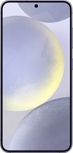

Celular Samsung s24
Sobre o Celular
O Samsung Galaxy S24 é um smartphone Android avançado e abrangente em todos os pontos de vista com algumas características excelentes. Tem uma grande tela de 6.2 polegadas com uma resolução de 2340x1080 pixels. As funcionalidades oferecidas pelo Samsung Galaxy S24 são muitas e inovadoras. Começando pelo 5G que permite a transferência de dados e excelente navegação na internet. Enfatizamos a excelente memória interna de 512 GB mas sem a possibilidade de expansão. O Samsung Galaxy S24 é um produto com poucos concorrentes em termos de multimídia graças à câmera de 50 megapixels que permite ao Samsung Galaxy S24 tirar fotos fantásticas com uma resolução de 8165x6124 pixels e gravar vídeos em 8K a espantosa resolução de 7680x4320 pixels. Muito fino, 7.6 milímetros, o que torna o Samsung Galaxy S24 realmente interessante.